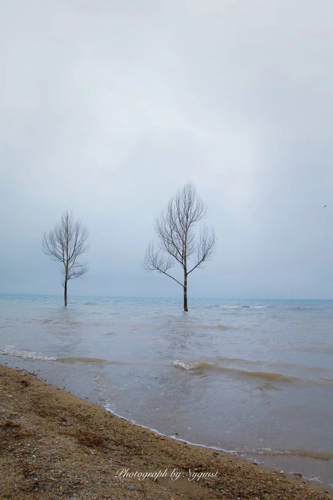
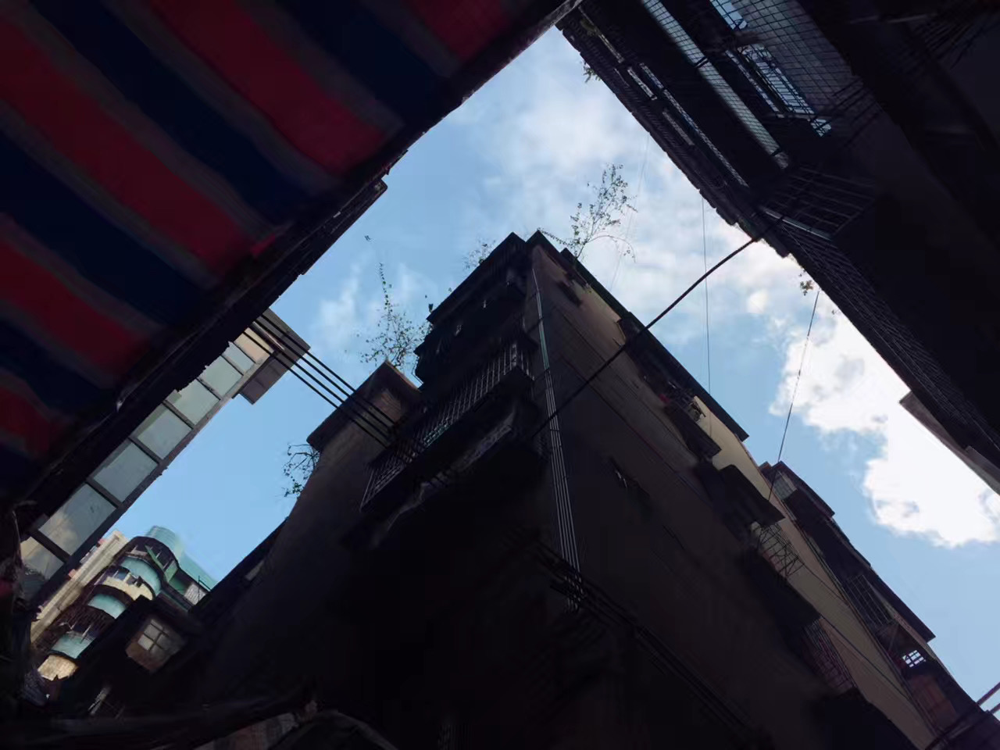
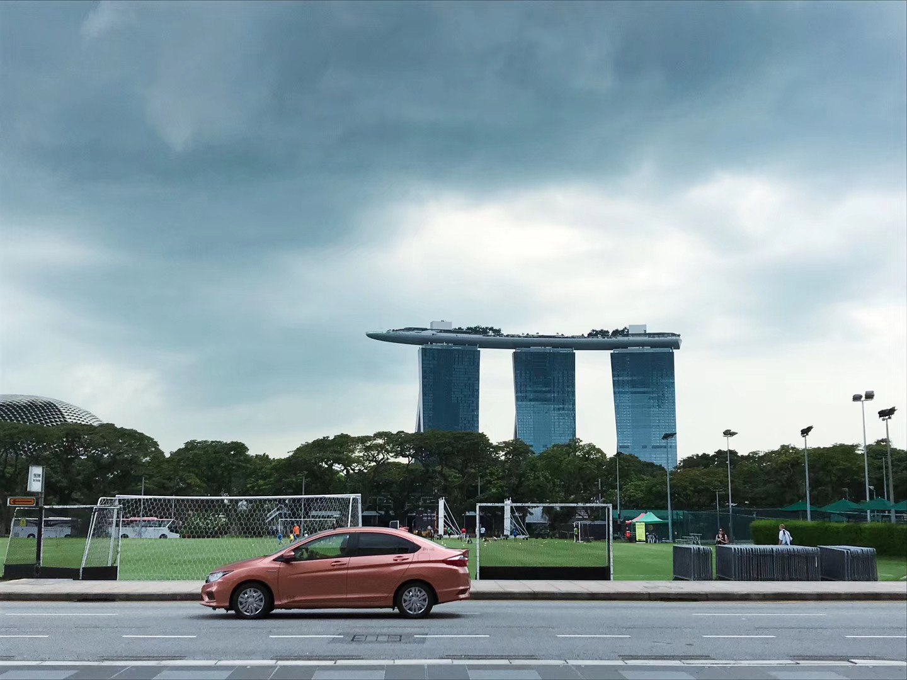
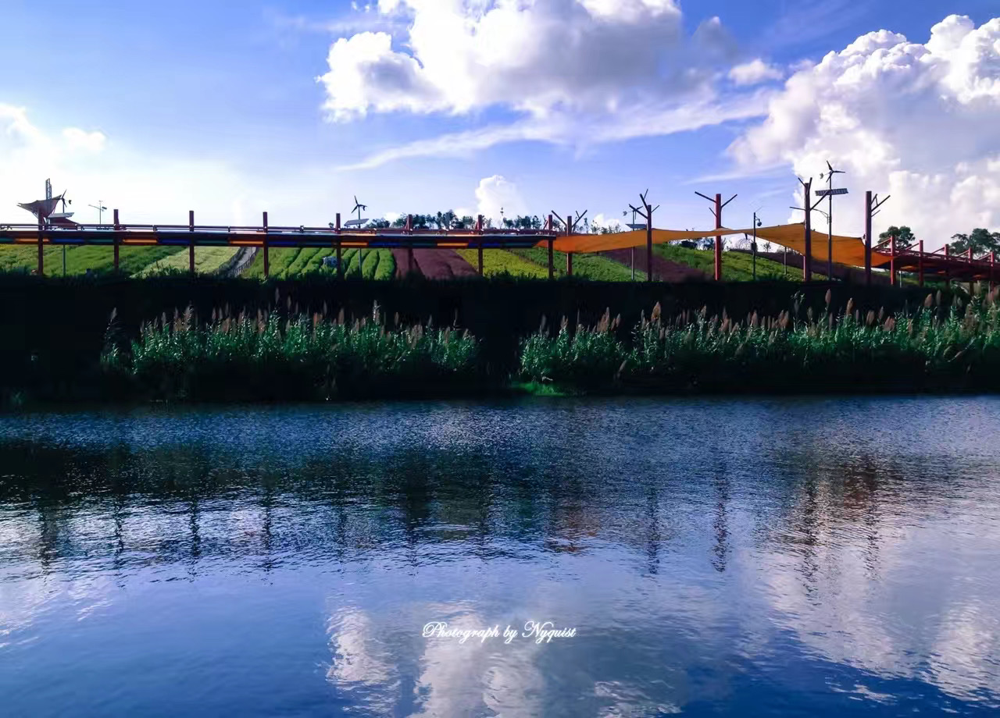
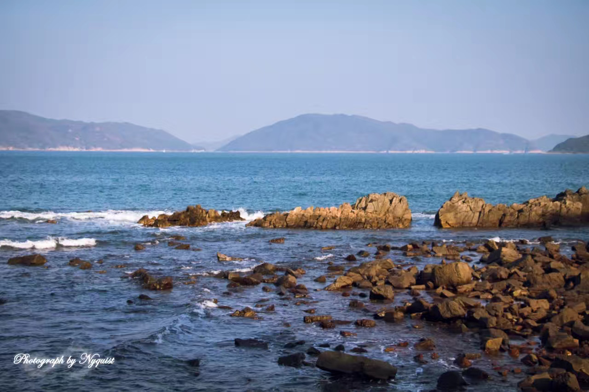
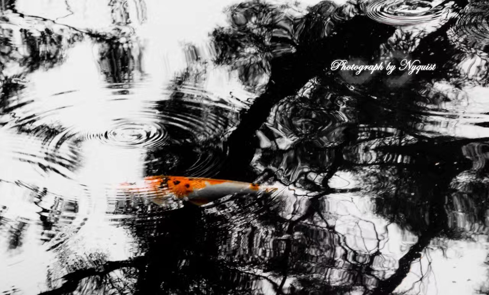
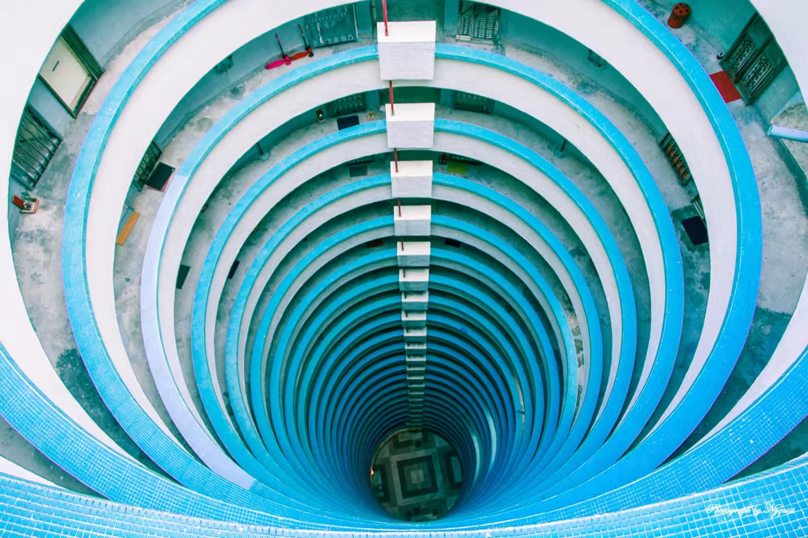
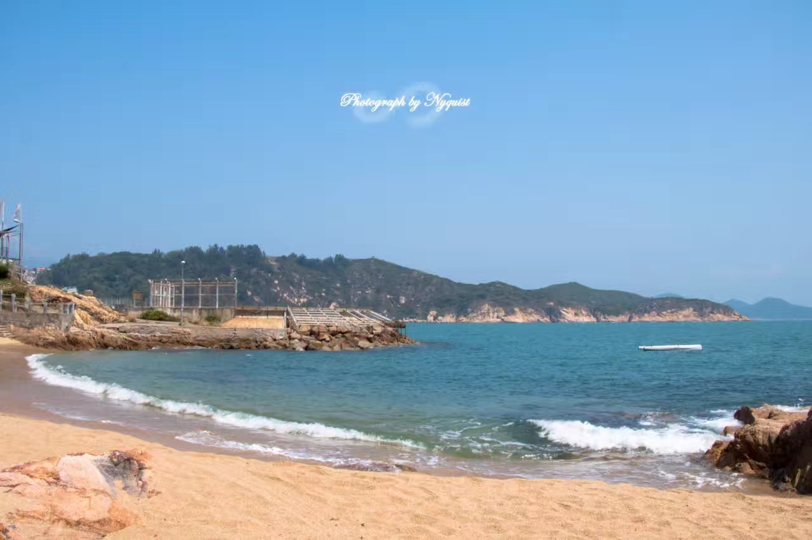

Miscellaneous
Musician
I love composing and producing music. Please check my pieces at NetEase.
网易云音乐请搜索“小能君”。
Photographer
 Musée du Louvre, Jun. 2018 |
ETH Zurich, Jun. 2018 |
 Eiffel Tower, Jun. 2018 |
 West Lake, Mar. 2014 |
 Huawei, Dongguan, Oct. 2020 |
 Qinghai Lake, Xining, Jun. 2021 |
| Switzerland, Jun. 2018 |
 Neuschwanstein, Jun. 2018 |
 Eiffel Tower, Jun. 2018 |
Prague, Jun. 2018 |
 Prague, Jun. 2018 |
Prague, Jun. 2018 |
 Copenhagen, May 2019 |
Stockholm, Jun. 2019 |
Dachaidan, Jun. 2021 |
Dali, Oct. 2015 |
Dali, Oct. 2015 |
 Dali, Oct. 2015 |
 Huangshan, Sep. 2013 |
Prague, Jun. 2018 |
 Prague, Jun. 2018 |
 West Lake, Nov. 2020 |
Zurich, Jun. 2018 |
 Shaoguan, Dec. 2016 |
 Dunhuang, Jun. 2021 |
Hongkong, Apr. 2017 |
 Hongkong, Aug. 2017 |
 Hakodate, Feb. 2018 |
 Hongkong, Apr. 2018 |
Brussels, Apr. 2019 |
 Changzhou, Jan. 2017 |
 Melbourne, Dec. 2017 |
 Melbourne, Dec. 2017 |
 Changzhou, Jan. 2017 |
Stockholm, Jun. 2019 |
Jeju, Mar. 2016 |
 Yulong Mountain, Oct. 2015 |
 Switzerland, Jun. 2018 |
 HKUST, Jul. 2018 |
 Singapore, Dec. 2018 |
 HKUST, Jun. 2017 |
 Shenzhen, Jul. 2013 |
 HKUST, Aug. 2016 |
 Hongkong, Sep. 2016 |
 HKUST, Dec. 2016 |
 CUHK, Apr. 2017 |
 Hongkong, Nov. 2017 |
 Hongkong, Apr. 2017 |